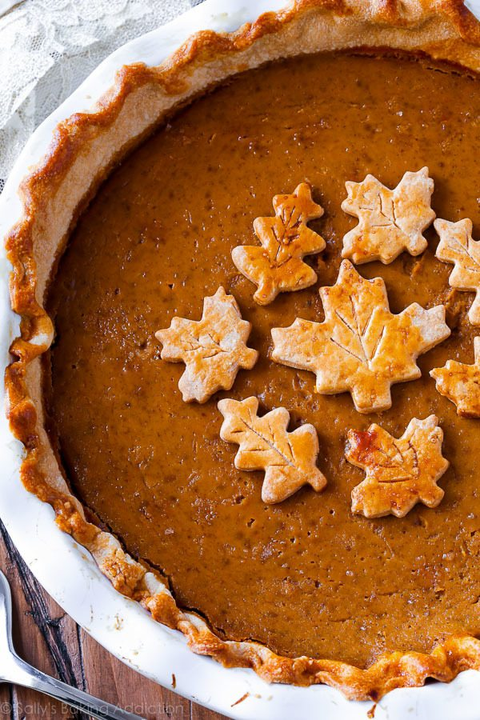

Pumpkin Pie

Description
Bursting with flavor, this pumpkin pie recipe is my very favorite. It’s rich, smooth, and tastes incredible on my homemade pie crust and served with whipped cream. The pie crust leaves are purely for decor, you can leave those off of the pie and only make 1 pie crust.
Ingredients
- Homemade Pie Dough (full recipe makes 2 crusts: 1 for bottom, 1 for leaf decor)
- egg wash: 1 large egg beaten with 1 tbsp milk
- one 15oz can pumpkin puree
- 3 large eggs
- 1 an 1/4 cups packed light or dark brown sugar
- 1 tbsp cornstarch
- 1/2 tsp salt
- 1 and 1/2 tsp ground cinnamon
- 1/2 tsp ground ginger
- 1/4 tsp ground or freshly grated nutmeg
- 1/8 teaspoon ground cloves
- 1/8 ground pepper
- 1 cup heavy cream
- 1/4 cup milk
Steps
- Preheat oven to 375°F (190°C).
- Roll out the chilled pie crust: Remove 1 disc of pie dough from the refrigerator. On a lightly floured work surface, roll the dough out into a 12-inch circle. Make sure to turn the dough about a quarter turn after every few rolls. Carefully place the dough into a 9-inch deep dish pie dish. Tuck it in with your fingers, making sure it’s tightly pressed into the pie dish. Fold any dough overhang back into the dish to form a thick rim around the edges. Crimp the edges with a fork or flute the edges with your fingers. Brush edges lightly with egg wash mixture.
- Par-bake the crust: Line the pie crust with parchment paper. Crunching up the parchment paper is helpful so that you can easily shape it into the crust. Fill with pie weights or dried beans. (Note that you will need at least 2 standard sets of pie weights to fit.) Make sure the weights/beans are evenly distributed around the pie dish. Par-bake the crust for 10 minutes. Carefully remove the parchment paper/pie weights. Prick the bottom of the crust all over with a fork to create steam vents and return crust (without weights) to the oven for 7-8 more minutes or until the bottom is *just* starting to brown.
- Make the pumpkin pie filling: Whisk the pumpkin, 3 eggs, and brown sugar together until combined. Add the cornstarch, salt, cinnamon, ginger, nutmeg, cloves, pepper, heavy cream, and milk. Vigorously whisk until everything is combined.
- Pour pumpkin pie filling into the warm crust. Only fill the crust about 3/4 of the way up. (If using a deep dish pie dish as instructed, you should only have a little filling leftover. Use extra to make mini pies with leftover pie dough scraps if you’d like.) Bake the pie until the center is almost set, about 55-60 minutes give or take. A small part of the center will be wobbly – that’s ok. After 25 minutes of baking, be sure to cover the edges of the crust with aluminum foil or use a pie crust shield to prevent the edges from getting too brown. Check for doneness at minute 50, and then 55, and then 60, etc.
- Once done, transfer the pie to a wire rack and allow to cool completely for at least 3 hours before garnishing and serving.